Zara Website Redesign Case Study
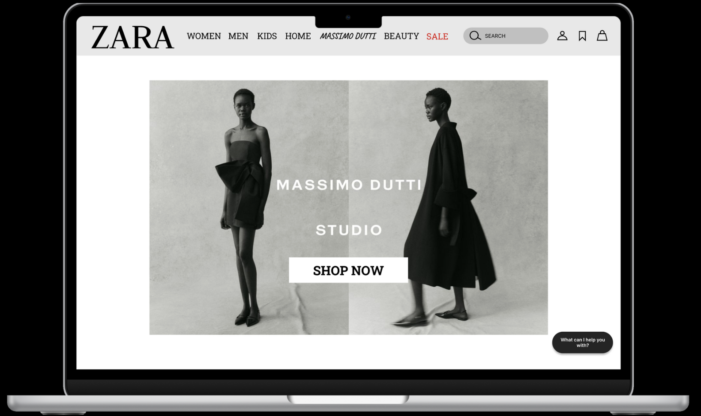
In the age of new media, digital content creators have been increasingly influencing the beauty space. Hundreds of Youtube and Instagram posts unraveled my love for new trends in fashion, and soon I found Zara to be my one-stop shop for staples. Zara is a retail clothing chain that sells the latest trends in clothing for women, men, and kids. Their items range from clothing, accessories, shoes, beauty products and perfumes. I would use the website to browse for options, but I constantly faced trouble navigating through it. After observing that other people also experienced issues with the website, I pursued this redesign as an opportunity to improve the experience in any way I could.
Brainstorming
My team members and I brainstormed various products ideas that we have faced difficulties with that we could use for our project. We created a mind map to help sort our ideas. As avid online shoppers, we thought about the various online websites to use. Personally, I remember struggling to navigate their website during Black Friday Flash sale, where I had to rush to checkout but UI made it difficult to use. My team members also recalled having trouble using the website, we decided to revamp their UI.
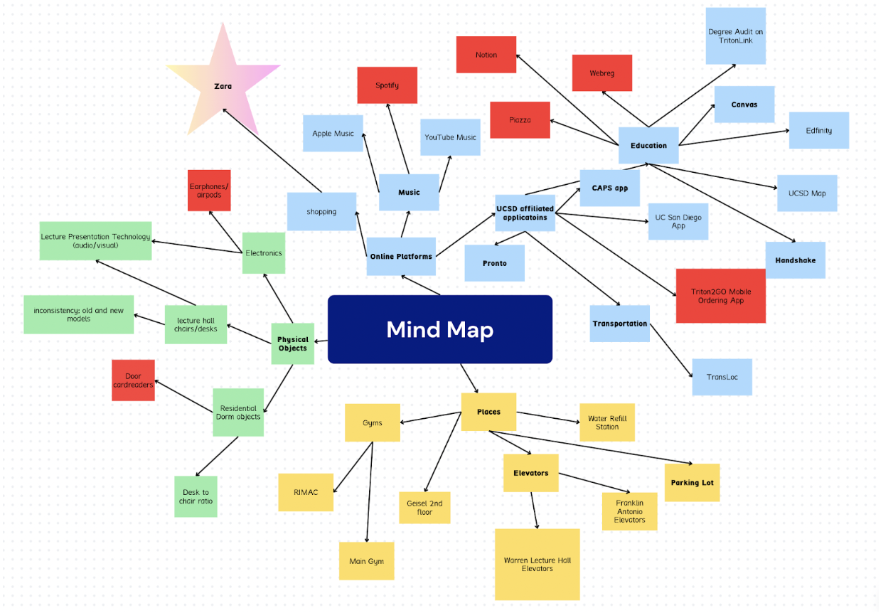
Personal Objectives
My group had two main motives for this case study:
- Facilitate a better user experience for Zara website by improving its UI
- Try out various roles involved in designing a product such as: User Researcher, User Experience Designer, Product Designer.
My specific contributions:
- Conducted 3 user interviews and helped organize research findings
- Made the Design Space and Tradeoffs
- Used Figma to create the Women Menu Bar, Individual Clothing Page, and assisted with the other redesigns
Understanding Zara and its Customers
We began my case study with a brand analysis of Zara, learning about its competitors and customer demographics along the way.
Target Audience Demographics
The demographic profile of Zara's target market is typically between the ages of 18 and 40, with a medium to high income level.
Online Survey
We conducted an online survey to further understand user motivation and behavior. Out of all the female respondents, 60% were teenagers and 40% were in their 20s. These ages seemed to be a fair representative sample of Zara’s young adult customer base. The survey asked respondents questions about their fashion consumer habits.
- What method of shopping for clothes (online or in-person) do you prefer?
- If you prefer online shopping, about how many times have you shopped online this month?
- How many times have you shopped in person this month?
- Which online shopping platforms do you use frequently?
- Have you ever shopped on Zara online? If so, about how many times have you?
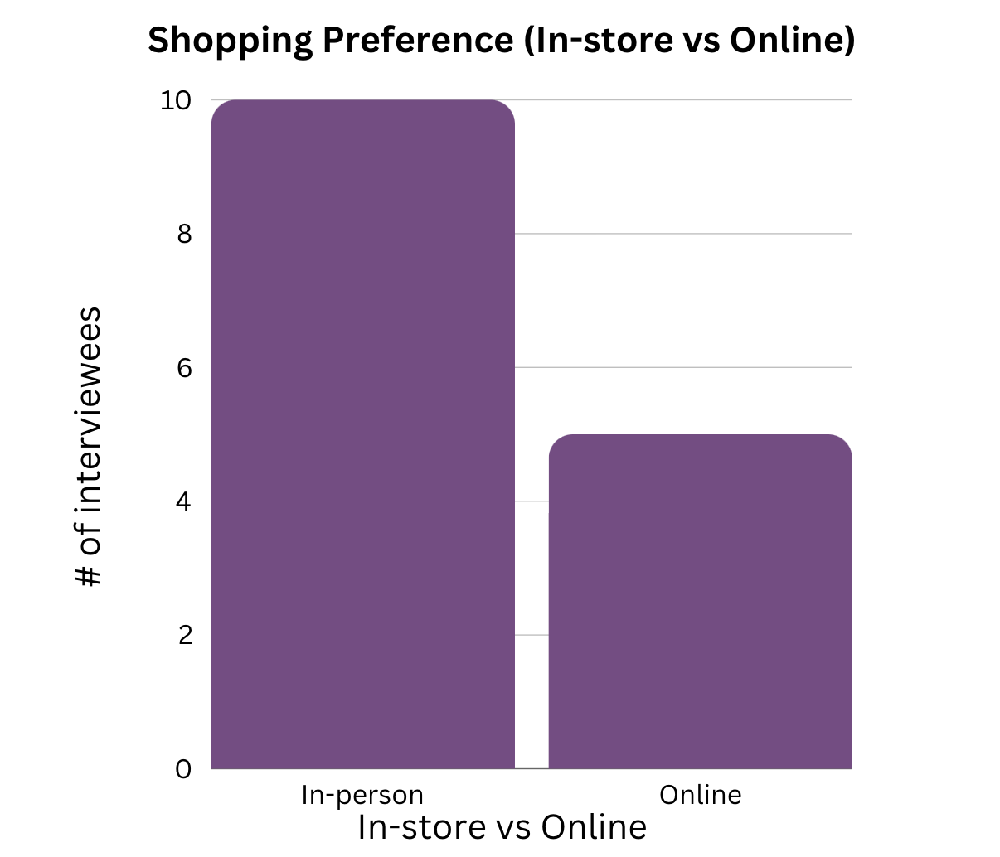
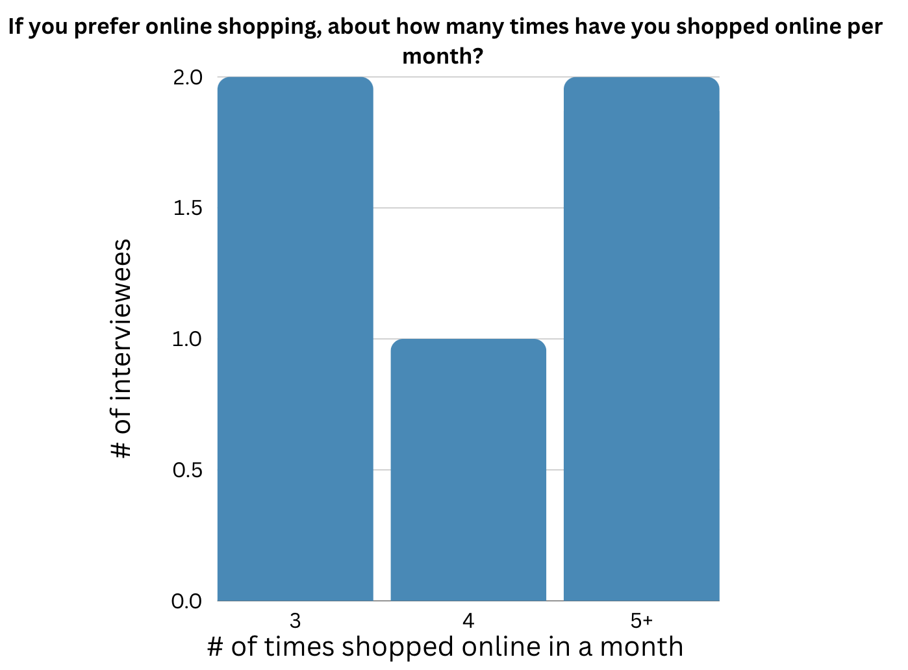
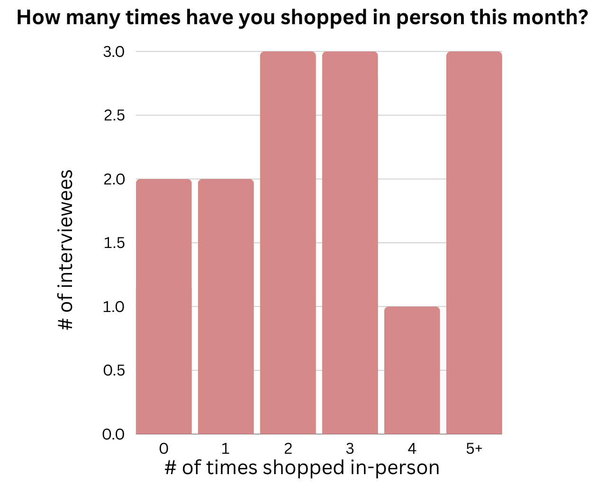
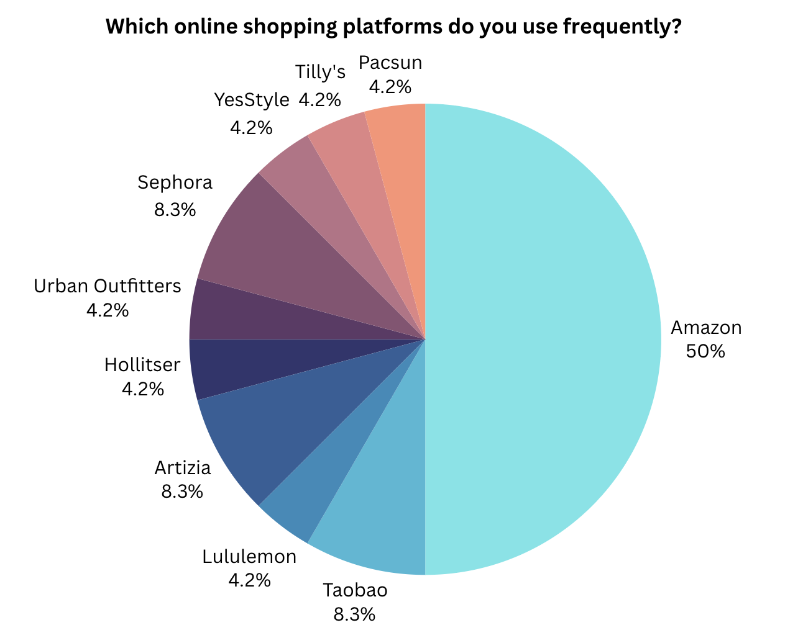
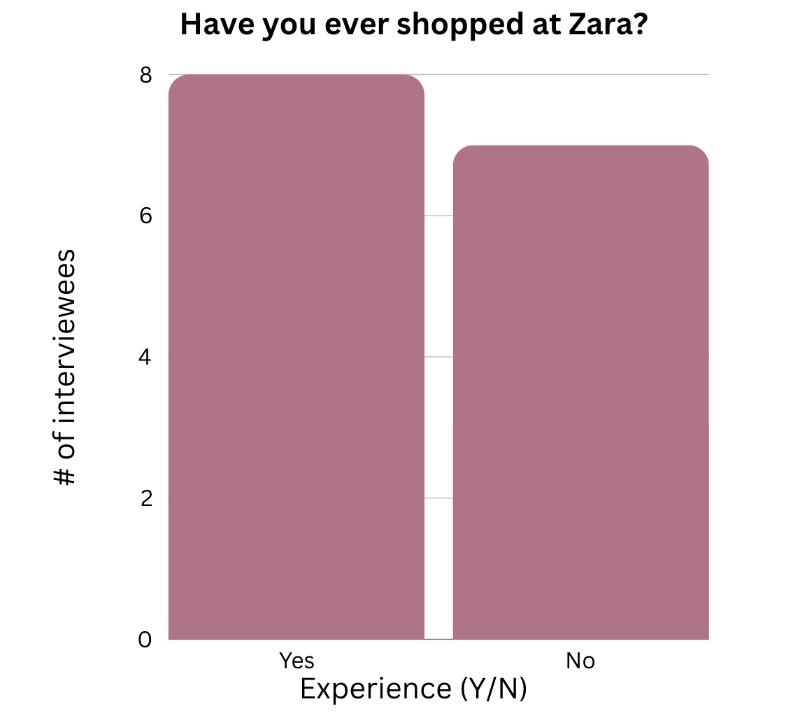
User Research
Usability Testing
To test the app’s user experience, we surveyed 15 people in San Diego via Google Forms (with respondents’ consent) and asked them to perform a few predefined tasks in the website as I recorded their actions and took notes. We used the master-apprentice model since we had guided questions to help respondents navigate through the website. Some of the tasks/questions were:
- Open Zara.com and use the search bar to find women’s jeans, and add it to your cart.
- Can you show us how to favorite/bookmark an item?
- Can you use the price and size filter to find a size small shirt under $20?
- Find “Nude Bouquet” perfume using the drop-down menu
- Can you show us how to remove an item from your cart?
- Can you show us how to switch the layout of the clothes options in the new section? Which layout do you prefer?
- Can you show us how to get to the sale section for women?
- Can you find the return policy?
- Can you show us what is in your cart and check out?
This is what users had to say during the usability tests:
"The font is what I dislike the most because it was difficult to read"
"It was much harder to use as compared to other platforms that I have used"
"I disliked how the sections didn't have subcategories and its all scrambled together"
"sensory overload on the main page"
"search feature was bad and hard to see and menu drop-down was very confusing"
Analysis
Affinity Map
An affinity map is often used to group similar observations together. We used it to surface several key issues common amongst participants.
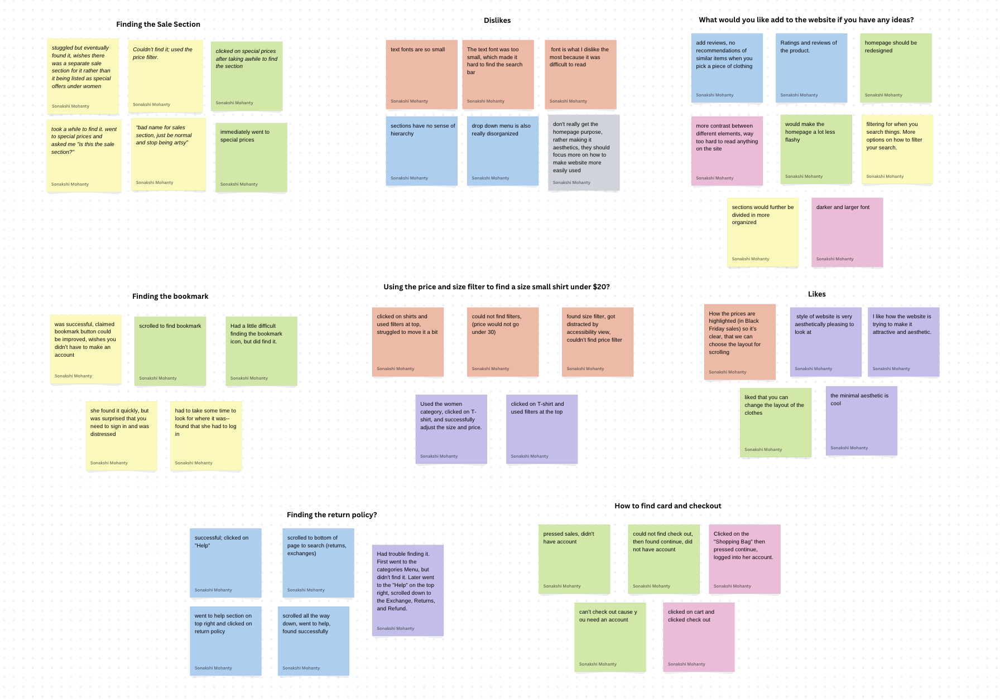
Competitive Research Analysis with Design Spaces
Design spaces are 2x2 matrices that help designers better understand the relationships between two things on a spectrum. I used it in my research findings to compare Zara to its competing business. It also helped me prioritize which issues to tackle. We chose popular store websites with a typically easier user interface to compare Zara to. I added a design space chart to show how I ranked each competing website too.
Competing Websites: Amazon, Urban Outfitters, Prada
Design Space #1
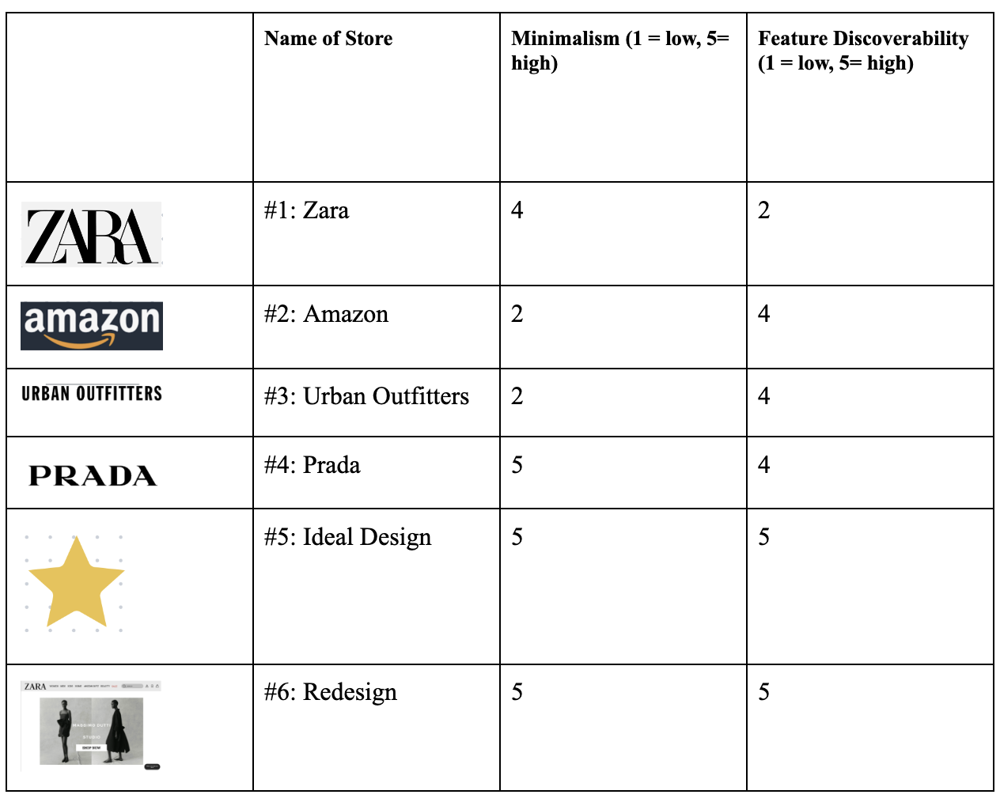
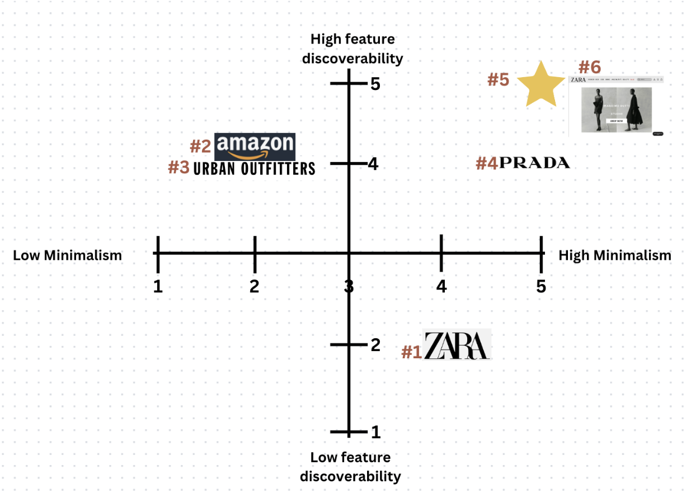
The chart shows the comparison between the discoverability of the product’s features and the minimalism of each website from a scale of 1 being low to 5 being high.
Zara is a very minimalistic website as their color scheme is very neutral and the typography is simple and the same throughout the website. However, their minimalist design affects the feature's discoverability because there is so much negative white space on some of their pages that it causes text and symbols to be very small.
Redesign's ranking in comparison:
- Minimalism — 5: still neutral color scheme with simple aesthetic
- Feature Discoverability — 5: easy to find features with larger, visible text and a more organized menu section
Discoverability of features: how visible the different features of the website are to the user when they first use the website.
Minimalism: refers to how clean a website looks and is associated with neutral colors, a lot of white spaces, simple typography, no distractions like big multicolor promotional banners.
Design Space #2
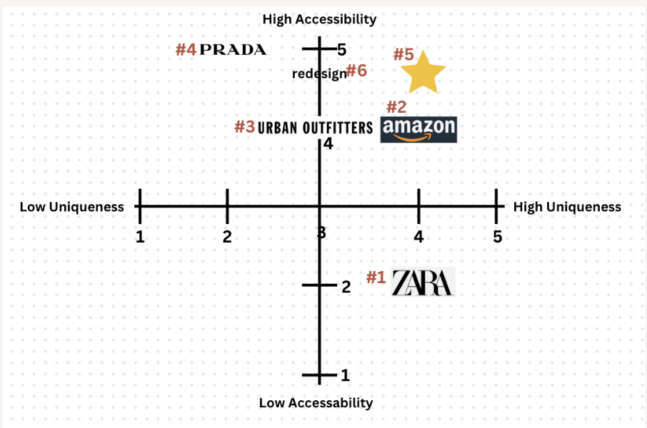
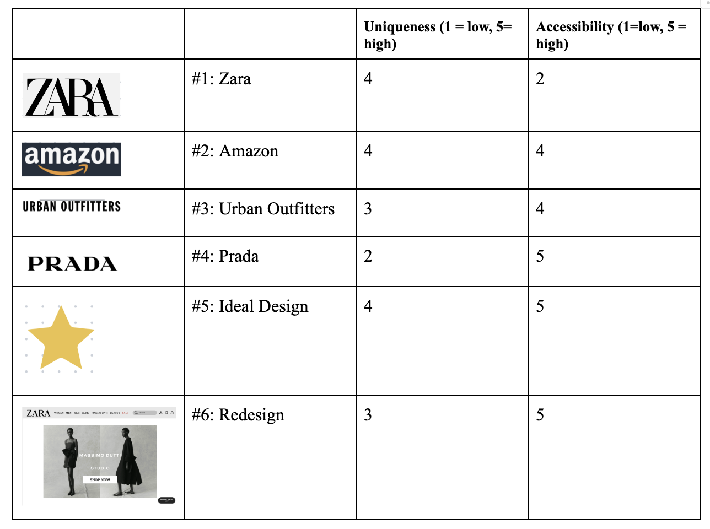
The chart shows the comparison between the accessibility of the websites and the uniqueness of each website from a scale of 1 being low to 5 being high. The design space shows that feature discoverability is a tradeoff to the minimalism of a website.
Accessibility: refers to how easy it is for the user to use the website. Uniqueness: refers to whether the website is different from other websites yet still functional.
Zara is a pretty unique website since it acts like a fashion editorial. The pictures of the models are very large compared to the prices and the homepage is also scrollable with a bunch of random images of models that have not much to do with Zara clothing items, making it seem more like a fashion editorial. The website does not have any banners such as sale or featured items like other shopping websites. However, this uniqueness causes it to be less accessible to shoppers. Since the website is not designed like other shopping websites and rather a fashion editorial, it is less user friendly. For example, the homepage have pictures cover the entire page, causing the navigation menu and search bar to be unreadable which are faulty signifiers.
Redesign’s ranking in comparison:
- Accessibility — 5: organized menu with subcategories and large, visible symbols & text
- Uniqueness — 3: similar to other websites, easier for users to use because it matches user’s mental model
Identifying the Problem
Trends and Errors Among Interviewees
The following issues stood out the most:
- 9/15 disliked the readability of the website as shown by the chart below, 2 being the most common ranking for readability
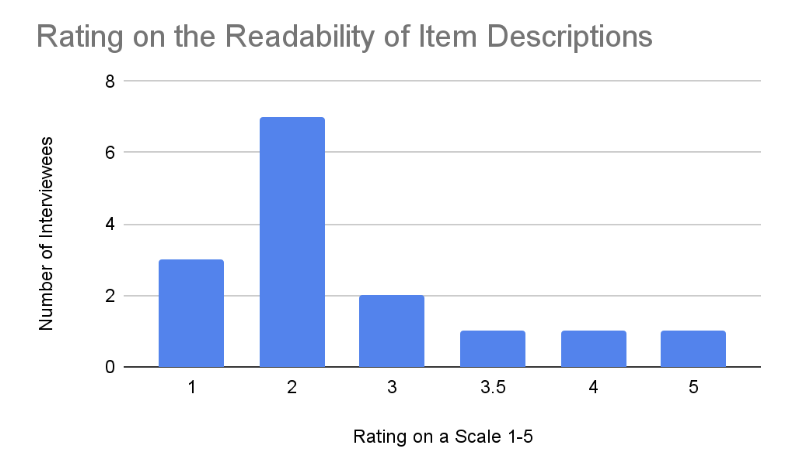
Users also made various rule based mistakes, which is when users correctly executed the intended actions, but the underlying rules proved faulty. According to the chart below:
- 6/15 had trouble finding the Sale Section since it was labeled "Special Prices"
- 9/15 struggled with finding the “Nude Bouquet” fragrance since perfumes were not under the beauty section
Users also made knowledge-based mistakes which due to knowledge deficits, users do not achieve the expected outcome.
- 9/15 struggled with identifying the purpose of the pictures on the homepage since they are not relevant to Zara and didn’t know if the pictures were for ads or aesthetics
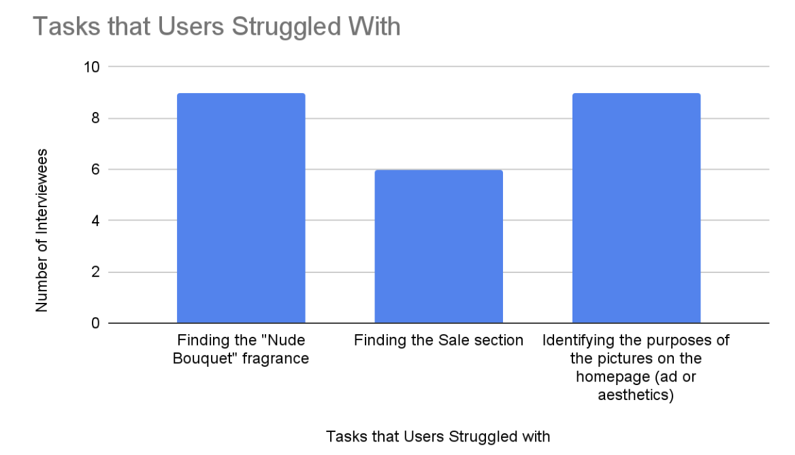
UX Suggestions & Redesign
Our redesign mainly focuses on the problems of:
- Readability
- Functionality/accessibility
- Organization
Inspiration and Ideas: Clothing sites like Prada, Weekday.
Experience #1: Home Page
In the original design, Zara’s images took up all negative space, making the text at the top bar hard to read. Not only did they lack a balance in space, but they also included many images that would confuse the users as their role on the website was unclear. In our redesign, we not only restructured the format of the homepage images, but changed the images to what we believed was more relevant to the shopping experience. The “SHOP NOW” button is a signifier that indicates that “Massimo Dutti” is a special clothing item line that customers can shop for. Adding negative space to the homepage makes it easier on the eye as well, while bringing an emphasis to the subject. We also created a “what can I help you with?” button on the bottom right rather than the person symbol Zara as it now clearly signifies that it affords giving the user help.
Homepage Before
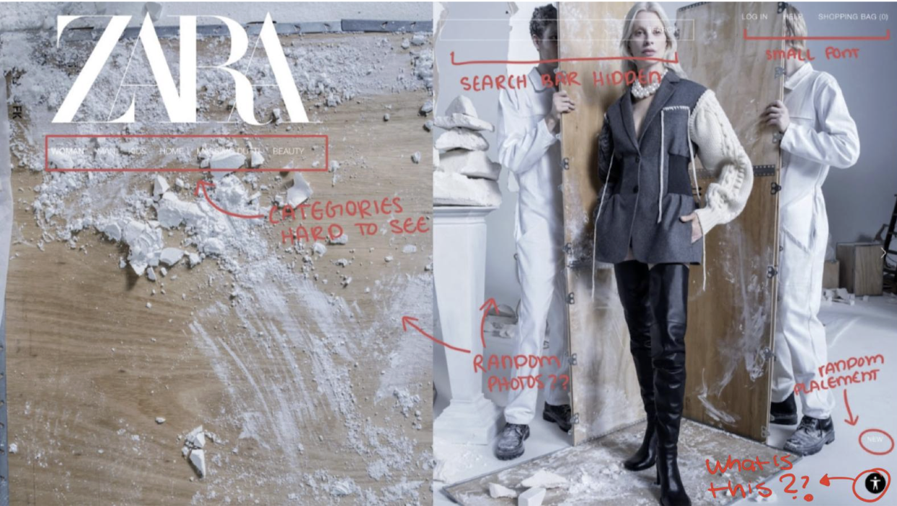
Homepage After
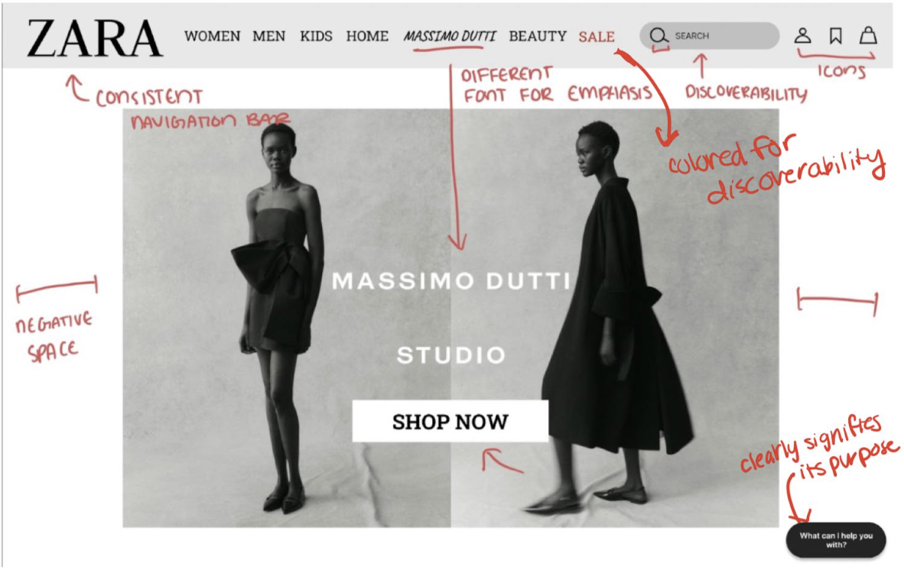
Experience #2: Menu Bar
We added icons for elements like “profile, favorites, shopping bag” and the search bar. These all have clear affordances to indicate that it is an interactive button. For the drop-down menu, we reorganized categories in the “WOMEN” section by spacing them out, making it easier to find what you are looking for by listing them in columns. We also added a sale section at the top navigation bar to make it easier to get to as the previous website design had “sale” listed as “special prices” that was hard to find. When hovering over each section, a horizontal bar will appear underneath the desired section. This bridges the gulf of evaluation as we added this to provide feedback to the user that they are under the intended section.
In this second redesign, we reorganized the Beauty drop-down category. We thought adding this category was important as 9 out of 15 users struggled to find the “Nude Bouquet” fragrance in our survey. Many users expressed confusion when looking for this item. They often had gravitated towards the “BEAUTY” section in the original design, until they finally found their destination through the women’s section. To tackle this issue, we moved fragrances to be under the “BEAUTY” section for easier navigation and discoverability.
Women and Beauty Menu Bar Before
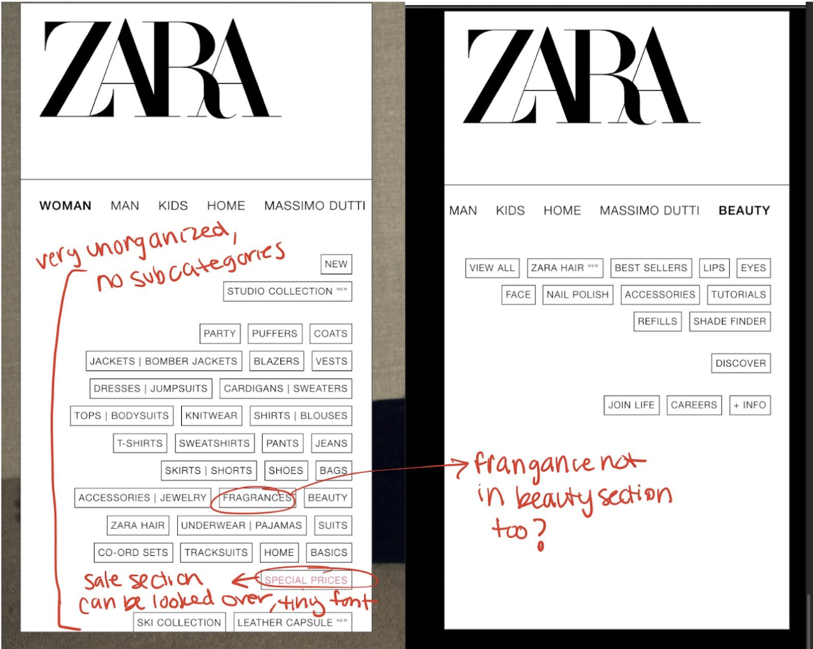
Women and Beauty Menu Bar After
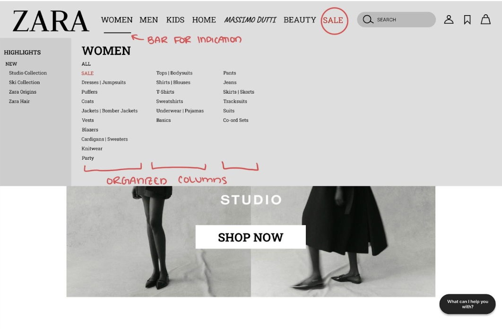
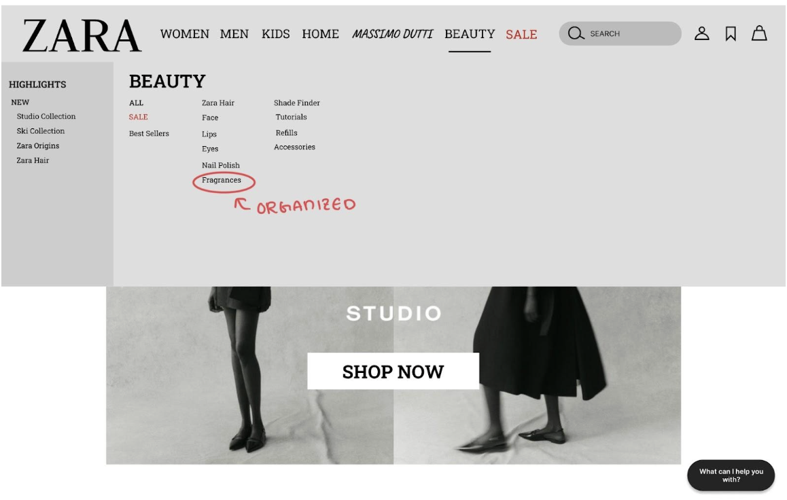
Experience #3: Individual Clothing Page
We re-oriented the display of the elements as we moved the clothing image gallery to the left-most side of the page. We wanted to display a left to right reading format. We made the text size and font more readable by adjusting the sizes and thickness of the font. We made important text, such as the clothing name, price, and description larger than the other text to make the main information more discoverable to the user and to signify that they are the most important information regarding the item. We made the sizes a drop down menu to reduce unnecessary space being taken up and make a more organized viewing for the user. We increased the size of the bookmark symbol to increase discoverability. The addition of reviews allows shoppers to find reviews more easily on the website rather than finding it on secondhand websites. Furthermore, we added the “Best Seller” sign at the top right, which is a feature that other shopping websites have that influence buying decisions. Additionally, we moved the “COMPOSITION AND CARE” section to the bottom since most people gravitate towards these sections last.
Individual Clothing Page Before
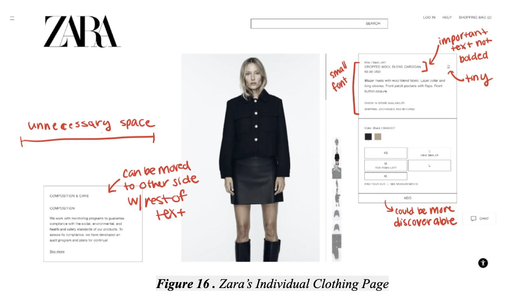
Individual Clothing Page After
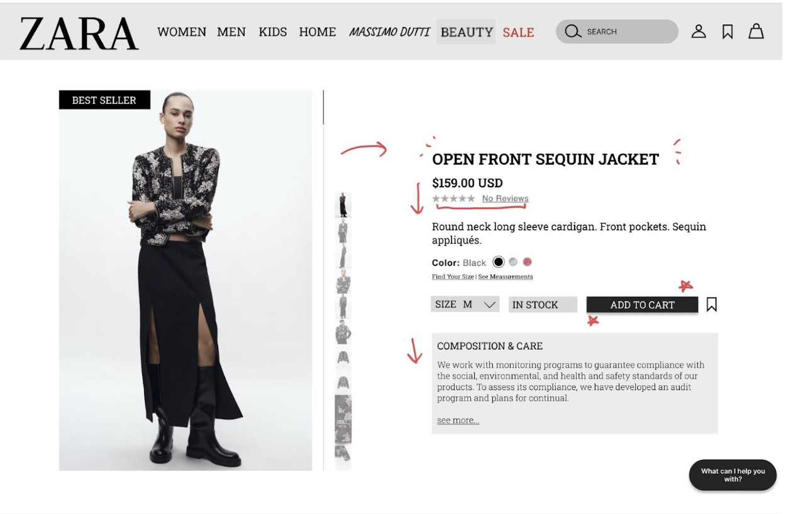
Validation Testing
To validate the changes we made, we surveyed our past interviewees users at the Sephora store with the prototype. I asked the same questions from my initial tests and recorded their behavior and feedback.
Here’s what people had to say about the redesign:
"Did you remake this? This is great and easier to understand."
"I like this better."
"This website less overwhelming now."
Results from validation testing:
As a result of the redesign, the success rate for tasks increased to 100%.
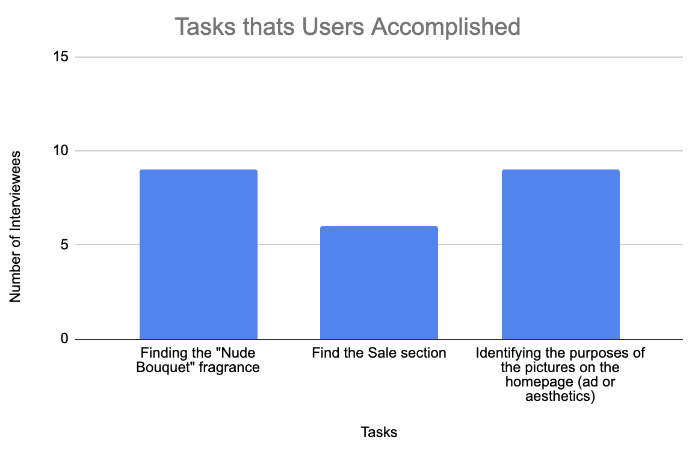
Reflections on my work here
This project allowed me to practice critical thinking, attention to detail, and human-centered design thinking to consider all the useful features I could add to such a simple tool. I sought opportunities to experiment with novel interactions and patterns and explore edge cases that were not initially captured in the project brief. Through my collaborations, I was able to learn how to gain an eye for redesigning.
In the end, I was able to deliver a feature that is intuitive and functional, with a visual system designed to subtly educate the users of shortcuts available but ultimately give all control and flexibility to the end-user. The most rewarding experience for me is knowing that I was successful in implementing research towards a redesign.